Donkeys (new, with animal welfare information)


{kind=link}
{kind=link}
Scientific name: Equus asinus asinus
Order/Family: Equidae
For more information see The Donkey Care Handbook
Introduction
Understand donkeys as the animals they are
Donkeys are from origin an animal which should always be ready to flight from predators, and therefore their instincts for flighting is still a part of their behavior. They are more likely to take up a fight than horses, and they are quite territorial animals. As domesticated animals, they sometimes have difficulties even in tolerating animals of other species within their territory. In nature, they would live in small flocks. They are sensitive to changes in the environment, and as dometic animals, this also means that they are sensitive to changes in the way in which humans behave and treat them. Their behavior often reflects the behavior of the humans who interact with them. All changes should therefore be introduced slowly and gradually. They have very good memories. They want to be stimulated, and a boring environment can create behavioral problems. They are very sensitive to pain and pain should always be considered, if they behave strangely or refuse to collaborate. Donkeys can learn quite easily, especially things which are close to their natural behavior, and they can be slow learners when they are asked to do something unnatural like lifting feet for check and cleaning. They are very fond of being scratched, because it reflects their mutual grooming behavior in the flock, so that is a good reward in a learning process. Sometimes the mutual relationship between donkeys and humans make one doubting who is training who, because the donkey seem to train humans in giving them rewards or scratching them at the right spots.
Donkeys are tolerant of hot, arid environments. They are strong animals and can work hard and carry burdens. They are often claimed to be stubborn, but they are really just very good survivors and that is important to understand when working with them: most of their behavior is motivated by their will to survive, and therefore avoid everything which they find difficult, frightening or painful.
Donkeys can be wonderful guard animals - the right donkey gelding (castrated male) or jenny will take care of an entire herd of cattle, sheep or goats - the natural aversion to predators will inspire the donkey to severely discourage any canine attacks on the herd.
Donkeys in East Africa
Despite the increase in mechanization, donkeys are still well deserving of the name 'beasts of burden'. Throughout the world, they play an important role in the transport of people and goods in rural, arid and semi-arid areas and where roads are poor or non-existent.
Donkeys at risk - Skin trade
Right now, millions of donkeys from Asia, Africa and South America are at risk of being stolen and slaughtered for their skins - the gelatin in the hide being a key ingredient in the prized traditional Chinese medicine called ejiao (e-gee-yow).
A new report (January 2017) by The Donkey Sanctuary reveals the shocking scale of this global demand for donkey skins - a demand that is unsustainable, whilst simultaneously causing mass-scale suffering to donkeys and risking the livelihoods of millions of people who depend on them. This trade, in both its legal and illegal forms, is resulting in a chain of welfare issues for the donkeys at every step, from sourcing to transport and finally slaughter. These issues can't be ignored - the donkeys' welfare and their real value supporting people's livelihoods is at risk.
We call for a halt to the trade in donkey skins to produce ejiao until the impact of the trade can be assessed and shown to be both humane for donkeys and sustainable for the communities that depend on them.
In particular, we urge other countries affected by this trade to follow the lead taken by Burkina Faso and Niger and ban the slaughter and export of donkeys for their skins.
We urge governments and the industry to join us in raising public awareness about the impact of this trade so that ejiao consumers can make an informed choice.
We call on governments and local authorities to join efforts to support affected communities, protecting them from the illegal trade and preventing the decimation of donkeys through the legal trade.
Breeds and Breeding
Domestic donkey breeds
- Abyssinian Donkey
- American Spotted Donkey
- Cypriot Donkey
- Mammoth Donkey
- Mammoth Jack
- Miniature Mediterranean Donkey
- Poitou Donkey: The Poitou Donkey breed was developed in France for the sole purpose of producing mules. It is a large donkey breed with a very long shaggy coat and no dorsal stripe.
- Spotted Ass
- Standard Donkey
- Burro - adopted wild Burro
- Wild Ass, Onager and Kiang
- East African Donkey
| 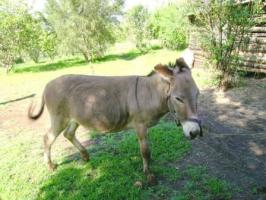 |
| East African donkey |
| (c) Val Corr, Naivasha, Kenya
|
Breeding
Housing
| 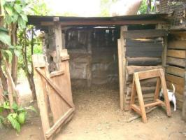 |
| A very simple stable made of off cuts, lined with plastic or sacks, with a door. Simple slip rails could be used instead. |
| (c) Val Corr, Naivasha, Kenya
|
The housing of donkeys can be kept very basic. Depending on the climate and season, a small shelter is sufficient. It should have, at the very least, a roof. It should, preferably also have three closed sides with the open side facing away from the prevailing wind directions.There must be enough space to lie down and the floor should not be damp or cold. Barbed wire enclosures should not be used for enclosing donkeys. Many donkeys will try to get through or jump over and injure themselves.
The shelter should be at least 8 foot x 8 foot (2.4 x 2.4 m) for a single donkey. If the house is smaller than this, the donkey may get 'cast' when it lies down. The floor should be cleaned regularly and never allowed to become muddy with manure and urine as the donkey will almost certainly develop foot problems. If the donkey is sheltered at night it is likely to be able to work much better as it will not have expended energy trying to keep warm. If the shelter has a door (which can very easily be made of slip rails) it is advisable to put water and hay inside the stable for the donkey to eat during the night. This will ensure that the donkey is rehydrated for work the following morning.
A donkey house can be constructed from 6 poles (one at each corner, one in the centre at the rear of the shelter, two for the door). The sides can be made of off cuts or, if these are not available, sacking can be fixed to the poles to afford shelter from the wind. The door should be at least 6 foot (1.8 m) wide. The stable needs to be at least 6 foot (1.8 m) high, and the roof should be pitched to allow water to drain. It is advisable to either gutter the roof and harvest the water or dig a ditch at the back of the shelter, in order that any water spillage is drained away from the stable.
Nutrition - Feeding your donkey
Donkeys generally take good care of themselves by using the feed efficiently for maintaining their own body, but perform even better when we take good care of them and feed them well. Donkeys that are well fed are generally healthier, more productive and cost less to maintain. Donkeys' tough digestive system is somewhat less prone to colic than that of horses, and is able to break down near-inedible vegetation, extracting moisture from food very efficiently. A donkey in a good body condition is less susceptible to injuries and skin damages than a skinny donkey. A donkey eats very little and is able to work long hours. In return you must feed the donkey so that (s)he maintains the same body weight even in periods of hard work or/and being pregnant. It can use low quality, high fibrous feed and likes to graze and browse. They use protein very efficient and can do with low protein fodder. Jennies in late gestation and lactating jennies need more energy and protein for the growth of the foetes and to supply the foal with sufficient milk.
When a female donkey has a foal, she will need time off. There is a very high mortality rate in donkey foals which is undoubtedly caused by the mother being worked to soon and too hard after birth, resulting in poor or insufficient milk production - the baby donkey will suffer from malnutrition and, in the worst case, will die from starvation.
Donkeys can be fed with fresh grass (grazing), all kind of hay and all kind of by-products. With a mixed ration, requirements for minerals, trace elements and vitamins will be met. With only old hay in the ration and no green feeds, mineral licks should be supplied. The longer the feed has been in the shamba, the harder it will be for the donkey to digest, the more it declines in proteins and the more it increases in fibre. Forage that "smokes" when shaken is moldy. Abortion, colic, and even death have been attributed to moldy hay. Avoid feeding your donkey with food that has turned moldy. Don't allow your donkeys to feed on garbage, its dangerous for their health.
Energy foods
Energy food gives donkey the strength to live, walk and work. The more energy foods your donkey eats the harder it can work and the stronger it will be. Donkeys get energy mainly from feeding on grass and straw. Feeds which contain higher leaf to stem ratio makes a feed more nutritious and easier to eat. Such feed has greater nutritional value.
Protein foods
Protein in foods gives your donkey what it needs to grow, stay healthy and recover from injuries and illness. Young donkeys need a lot of protein to grow, they get it from the mother's milk. Donkeys get protein from dark green foods like alfalfa, bean straw and some types of trees like acacia. You can also supplement protein with cattle or sheep's food. However, any of these supplements should NOT contain UREA (in organic it is not allowed to add urea as protein source or improve digestibility).
Fats
Fats in food help to keep your donkey healthy and warm. Body fats act as a store of energy when food is in short supply. Most of the donkey's food does not contain much fat, but its body can make fat and store it from the surplus energy and protein not needed for labour, growth, milk.
Vitamins
Vitamins keep your donkey healthy and strong. If it doesn't get vitamins it will become weak and sick. Donkeys get vitamins from fresh green foods like vegetables or grass. Green feed in normally higher in all vitamins, particularly vitamin A. Dry, old grass contains few vitamins.
Minerals
Minerals and salts give your donkey strong bones, teeth and a higher blood count. If your donkey doesn't get enough minerals its bones become weak and fragile. If a donkey doesn't get enough salt it will feel weak. On hot days it loses salt from its body through sweat and needs to eat more salt to replace the lost salts. Feeds from legumes, like alfalfa and clover are normally higher in proteins, vitamins and minerals (especially calcium) that feeds from grass
How much feed?
The amount of fresh food a donkey needs depends on food quality, food freshness and the nature of the donkey's work or gestation/lactation. The following table shows the recommended feed for donkeys with different needs.
| ACTIVITY | FEED REQUIRED |
| Non working donkey | Napier and fresh grass |
| Working donkey | Napier, fresh grass and rice straw |
| Adult males | Napier and fresh grass |
| Pregnant females | Napier and fresh grass |
| Grazing donkey | Napier and fresh grass |
| Milking females | Napier, fresh grass rice straw and Maize husks/cobs. |
A nursing jenny needs to eat the equivalent of about 2 - 3% of her body weight a day in dry matter if she is only fed forage. 1 kg of dry matter in fresh grass is about 5 kg of grass, in hay it is about 1.2 kg. A working donkey needs to eat a volume of about 3 - 4% of its body weight a day. Thus an average donkey (of 100 kg body weight) will need about 15 kg of green fodder a day and more if nursing or working. If a donkey cannot obtain this amount from available grazing, it will need supplements. If concentrate are fed each working day, they will require less grazing, and learn that work brings rewards. If a donkey is fed well, but is still thin, it probably has internal parasites which need treating.
Water
If possible donkeys should have access to fresh water at all times, or at least in the morning and evening. Donkeys don't overdrink. Lack of water can cause colic, a fatal condition. The water trough or buckets should be kept clean. Donkeys should be allowed to drink as much as they want without being rushed. Drinking from ponds or streams is fine as long as they are not exposed to heavily used, muddy areas as these may contain parasites such as liver fluke.
The importance of water cannot be stressed enough. When deprived of water for extended periods a donkey will suffer muscle fatigue and, in severe cases, death will result.
General Guidelines
- Give plenty of water to drink such that it wants to eat more; give water before you feed.
- Feed your donkey more on working days and when heavily pregnant
- Feed your donkey in trough not on the ground; this reduces waste.
- Grow some crops or grass that your donkey can routinely feed on in your compound or garden
- Save some feed that you might feed to your other animals for your donkey
- Feed more crop residues such as maize stover or rice straw, store them off the ground and under cover.
- Feed kitchen waste to you donkey and crop residues from bean and pea crops, which contain lots of protein.
- Give your donkey a salt lick
- Give a little fresh green feed every day.
- Use a running line tether along ditches and fields boundaries so that your donkey has a lot to choose from.
- Use a nosebag to feed when it is resting during the working day
- If your donkey is over 10 years old, ask the veterinarian or animal health worked to check its teeth, and if necessary file them.
- Check your donkey for worms and other parasites and if necessary, treat it.
WARNING: DO NOT feed donkeys with cattle or goat/sheep's feed that contains urea (biuret) or monensin (both are forbidden in organic feed). Check the label and if in doubt don't feed otherwise you'll kill it!
Feed supplements, alternative feed resources, feeding methods
Provided natural pasture is abundant and donkeys have adequate time to graze, the feeding of donkeys should not be a major problem. Besides forage (or roughage) from grazing, the animals may be fed additional forage and concentrates provided by the farmer, depending on age and workload. In general, feeding strategies should be aimed at maintaining adequate body condition during periods of work or reproduction. Some preserved forage or concentrates should be stored for such periods. This is particularly important if donkeys have to work at the end of the dry season, when natural pasture is scarce. The most common forage supplements are crop residues. These include groundnut hay, and maize and sorghum stover. The leaves of legume fodder trees (e.g., Leucaena, Sesbania and some Acacias) are rich in protein and can also be fed to donkeys. Supplements are most important in the following conditions:
-
Local grazing is poor because of drought or over-grazing.
-
Animals must walk long distances for food.
-
Donkeys do not get at least six grazing hours each day.
-
Female donkeys are in the last three months of pregnancy or they are nursing a foal.
-
Young foals are growing, especially between 6 and 18 months of age.
Take care when staking donkeys for eating
If donkeys are staked when grazing, it is important to move their stake daily, or even twice per day. The donkey must have enough rope to move and can find shade in hot temperatures.
Never tie a donkey by its leg as this may cause blood restriction which could result in the foot falling off. If they are fenced, it is better to have several small paddocks rather than one large one. This allows donkeys to be moved often (rotational grazing). In this way donkeys gain more nutrients than if they continually and selectively graze one large pasture. A grazing donkey can ingest eggs of internal parasites contained in manure, causing internal infections with these parasites, particularly worms. Therefore donkeys should not be allowed to graze in areas with lots of manure.
Never resort to placing a wire ring in the nose of a donkey. The septum is not the same as that of a cow and the wire will nearly always cause serious damage to the donkeys nose. This can result in infection of the nasal/sinus passages.
| 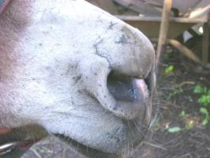 |
| Damaged Nose |
| (c) Val Corr, Naivasha, Kenya
|
Care and Management of working Donkeys
All animals are sensitive to how we treat them. That counts also for donkeys. If we treat them better, they will be healthier, feel better, live longer and they will produce better. With humane, considerate care and treatment, a donkey becomes the most co-operative and productive work animal. Donkeys are known for their willingness to work for man (they are very slow, but this is why they are so tough) and for their longevity. A donkey that is well cared for is able to work for at least 15 years. If they are not taken care off, they don't make much past 7 years.
![]() |
| Avoid injuries on working donkey |
| (c) Mette Vaarst
|
Below are some practices you should consider in your relationship with your donkey.
Treat your donkey humanely
Donkeys should always be treated gently. If you are harsh to your donkey, it will not be friendly to you. When a donkey is working, and during the dry season she needs a balanced diet and mineral salts. If using your donkey to carry loads on her back, ensure that the load is not to heavy, that the load is balanced, the backbone is protected and there is enough padding to prevent sores from developing. For pulling carts use comfortable breast straps or collar harnessing with breaching and don't overload carts. Always ensure that the draw pole does not rub against the donkey's body, causing injuries and sores. If your donkey is tethered, be sure the rope is not hurting. If the hoofs are getting to long and or uneven, trim them proper so that it can walk without pain. Wash sweat patches on the donkey and on the harness with clean water after work to prevent it from causing lesions.
Keep your donkey healthy
If your donkey is not eating well and looks dull or sick, seek veterinary advice. If you are the owner you are responsible of its health and wellbeing. If your donkey is grazing the same field all year round it could be infected with internal parasites. Rotational grazing solves that problem. When that is not possible, de-worm your donkey if it is infected. De-worming is most effective at the end of dry season, or before seasonal rains. The most common disease in donkeys include: tetanus, tick, fever, african horse sickness, pneumonia and rabies. All these illnesses need veterinary attention
Use harnesses that fit
Good harnessing is important in order to easily handle and work better with your donkey and prevent it to get injured and have wounds. Don't allow harnesses e.g. timber or metal bars to come over the donkey's back as this may cause wounds. It is very easy to cover your harness and ropes in sheep skin, with the hair side against the donkeys skin (especially on their shoulders, backs and under their tails).Keep harnesses and equipment around where your donkey rests so that she becomes familiar with them. Use also carts that do not cause pain, injuries and sores to the donkey.
Train your donkey
Training should precede working sessions and donkeys usually learn very fast.
| Pull carts |
| 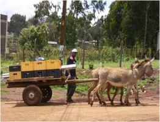 |
| Donkeys pulling cart. It is important to use harnesses that fit to the size and shape of the donkey, and pack them carefully and balanced and with no ropes which injures hair and skin |
| (c) KENDAT, Kenya
|
| Carrying heavy loads |
| 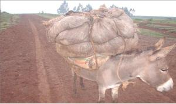 |
| A donkey carrying pack goods. It is important to use harnesses that fit to the size and shape of the donkey, and pack them carefully and balanced and with no ropes which injures hair and skin. |
| (c) KENDAT, Kenya
|
| Ploughing |
| 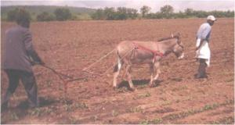 |
| A farmer tilling his land with donkeys: it is important to use harnesses and equipment which fit to the donkey, and take care that it can manage the task. |
| (c) KENDAT, Kenya
|
| Riding |
| 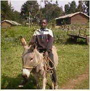 |
| A boy riding on a donkey |
| (c) KENDAT, Kenya
|
Guard animals
Donkeys can also make wonderful guard animals - the right donkey gelding (male) or jennet will take care of an entire herd of cattle, sheep or goats - the natural aversion to predators will inspire the donkey to severely discourage any canine attacks on the herd.
Some good practices
DO's
-
Allow your donkey to rest and graze before work. Make sure (s)he gets enough to eat and enough water to drink.
-
Give your donkey at least one day rest per week.
-
Shelter your donkey at night and especially during hot and wet/rainy weather
-
Provide your donkey with a dry soil/floor to stand to prevent thrush.
-
Allow only adults who will take good care of your donkey to use it.approach your donkey from the sideway and not from the front nor the back. They cannot see you very well from the front , as she will be surprised and may react defensively.
- Ensure that your donkey pulls only a load that itis comfortable with. It is better to make two journeys if the load is heavy
- Don't injure your donkey by whipping, cutting or caning.
- Don't use a stick on their heads. This only makes them 'head shy' and difficult to deal with.
- Don't beat donkeys although they are notoriously lazy even though it is necessary to carry a stick.
-
Don't beat or cane your donkey when she is struggling to pull a heavy load up a slope. Help by pushing the cart from behind instead.
-
Don't overload your donkey or work it when sick, as this is against the law and it is causing damages and shortens the donkeys life. Don't let a 'contractor' misuse your donkey. Make him understand the value of your donkey and, if you are not happy with his treatment of your donkey, find another 'contractor'.
-
Don't leave your donkey to roam around especially at night; she may cause a road accident.
-
Don't tie your donkey by the leg. This may cause her to break her leg. Instead, use a head collar and tie the rope to it or if not available, tie the rope around her neck.
Daily care of working donkeys
At the beginning of the working day a halter has to be placed around a donkey's head, for instance by using a rope that passes behind the ears and around the nose. Lead the animal to a tree or post to groom and prepare it.
Donkeys like routine so use the same place and routine each day.This is a good moment to give some concentrates or by-products. Otherwise give something like fruit peelings, a banana or a handful of maize. This will encourage the donkey to come and enjoy human attention. Observe the donkey. If its behaviour is different from previous days then something may be wrong. Alertness and interest will indicate that the donkey is healthy.Feel the legs to be sure they are not swollen or hot. Any damage to the legs caused on the previous day will show up in a stiff and obviously uncomfortable gait. Any temporary stiffness should be quickly .walked off. If this does not happen the donkey should be put to rest for as long as necessary. If the stiffness persists a veterinarian needs to be consulted.
Care of the coat
Grooming means taking care of the hair and skin of the animal. Daily grooming is important for the health of working donkeys. Donkeys enjoy being groomed and will become tamer by this daily routine. Grooming keeps the donkey's skin healthy and prevents dirt from causing harness sores. Give special attention to those parts of the skin that are in contact with the harness and/or back pad and sweaty.Grooming should be done after work and can be done with a wad of dry grass or a piece of old sack. This will massage tired muscles, loosen dirt and dust and dead hair.
If a donkey gets very dirty or sweaty, it may be helpful to wash it all over with clean water after work. Take a damp cloth and wipe out the nostrils and around the eyes. Any secretions that may have occurred during the night should not be left on the face during the day, as these will attract flies.
Check the coat for external parasites such as ticks. Ticks do not only create wounds, but also spread many infectious diseases. Check especially under the tail and inside the legs where the donkey cannot easily reach when grooming itself. Remove by hand any ticks that are found.
Care of legs and hooves
Inspect a donkey's hooves daily and take care of them. A donkey.s hoof should be short and upright with an oval bottom. If the toe becomes long and slanted, it should be trimmed. Excess hoof wall, as well as ragged loose pieces of frog, can be removed with a sharp, strong knife. Cracks and chips in the wall can spread, and eventually destroy the entire hoof. Coating them daily with oil or grease may help hooves that are very dry or brittle, badly cracked or broken. This prevents them from further dehydration and assists healing.
| 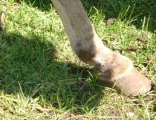 |
| Hoof in good condition |
| (c) Val Corr, Naivasha, Kenya
|
A donkey will pick up its foot if the tendon is pinched at the back of the leg, just above the pastern. Pick up and handle the feet of the donkey early and often in its training, calling a clear command like leg! so that it will not object to this care later on during its working life.
| 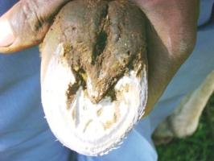 |
| Healthy frog |
| (c) Val Corr, Naivasha, Kenya
|
Clean out the bottom of the hooves with a hoof pick before each use of the donkey, to prevent lameness from stones or other materials penetrating the sole of the foot. Clean from the heel towards the toe, especially in the grooves between the frog and the bars of the hoof.
| 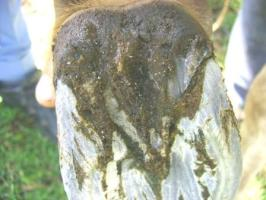 |
| Wet frog needing attention |
| (c) Val Corr, Naivasha, Kenya
|
If the area around the frog becomes black, oozing and very smelly the animal has thrush. This bacterial disease results from prolonged standing in wet areas. Treat it by pouring on a solution of copper sulfate or iodine daily. Take the animal out of wet housing and provide a dry floor. An untreated hoof will rot and cripple the animal permanently.
| 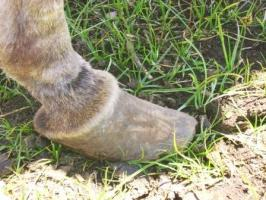 |
| Foot dangerously long |
| (c) Val Corr, Naivasha, Kenya
|
| 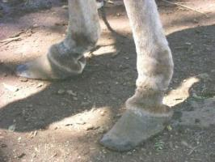 |
| Rope marks on both legs |
| (c) Val Corr, Naivasha, Kenya
|
Implements and tillage practices
Most of the implements used in crop production in Africa have been designed for use with oxen. These implements are too heavy for a single donkey or a teams with two donkeys. They can be useful for a team of four donkeys in good condition. Increasing the number of animals in a team is not always the answer.
Teams of more than four donkeys are difficult to use, unless fields are large, and work output per animal drops as the number of animals in a team increases (eg Karim-Sesay, 1993). It is unlikely that farmers would be able to make harnesses for this kind of work, without seriously compromising the wellbeing of the working animals.
A major challenge to the agricultural engineers is to identify, design or modify implements that can be used effectively by donkeys in primary cultivation. The implement has to be technically acceptable by and affordable to farmers in order to be adopted by them.
Secondary cultivation, weeding and carting require lower draft forces than plowing and the low live weight of the donkey is less of a constraint. This is also the case on light sandy soils where plowing is often unnecessary for crop establishment. The development of alternative tillage practices that require less power than conventional plowing in which the donkey can be used provide a further challenge to engineers and soil scientists.
Harnesses
Designs for suitable harnesses for donkeys are available, and consist of two types: collars and breastbands. The problem of harnessing is therefore not a technical one, but more one of acceptance, money to buy it, education and dissemination. The challenge is to develop techniques to teach the farmers the benefits of using harnesses that are comfortable to the animal, and then encourage them to use these harnesses. Showing them that donkeys with a comfortable harness work better and last longen without wounds could help.
In Africa this generally means a breastband harness, although there are a few areas where collar harnesses are available. Collar harnesses, while excellent for the donkey, are expensive for the farmers and require some training of artisans in their construction. Breastband harnesses are a cheaper alternative to collar harnesses, but these can cause bad sores if they are not made correctly and/or fitted correctly.
| 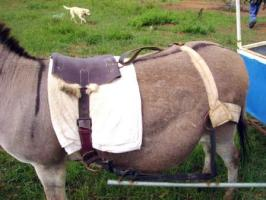 |
| Harness pad with cloth underneath to stop rubbing |
| (c) Val Corr, Naivasha, Kenya
|
The bands should be broad and of a material which will not readily rub the donkey, although padding of the harness with softer less abrasive material can overcome the latter problem. The harness straps can easily be covered n sheep skin which will avoid rubbing at very little or no cost to the owner.
Fastenings should not be of a type that will rub the animal and adjustable straps over the back enable the size of the harness to be changed to fit different sizes of donkey. This is important if it is to be used on different animals.
Manufacturers of harnesses often make them too thin, to save on material and without adjustments or padding, in order to keep the price down. Purchase of such harnesses can prove a false economy to donkey users as they usually cause sores on the animals, thus reducing work performance. In some areas , farmers very often use the yokes they have for the cattle on the donkeys. This is not suitable for donkeys and might be illegal in some areas.
| 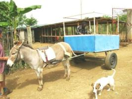 |
| Donkey in well balanced cart |
| (c) Val Corr, Naivasha, Kenya
|
Marking
It is common practice for donkey owners, particular in rural areas and where donkeys live in large herds, to mark their animals. This is often done with hot wire (which is extremely painful) and by cutting patterns in their ears or, in worst case, to cut the ears off altogether. The first method is acceptable in that it is probably the only way rural donkey owners have of identifying their animals. The second method should be avoided at all costs.
| 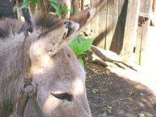 |
| Donkeys ears cut off |
| (c) Val Corr, Naivasha, Kenya
|
Donkey's Health and Diseases
- Observing how the donkey responds to your arrival, as well as its food and water
- Check the fecal consistency
- Check that the eyes are bright and clear; wipe away eye secretions as they attract flies.
- Check the hooves- overgrowth, cracks, abnormal smells
- Check the skin for external parasites such as ticks
- Check for donkeys' gait- for signs of lameness.
A. Handling and restraint
- Use minimum level of restraint; don't use force while restraining the animal.
- If the animal becomes difficult don't beat him/her but you need to stop and reassess the situation.
- Always impress upon the owner/user on proper restraining of his/her animal; as this will save you valuable time. Advice them on the need of not pulling the ears or applying pressure on the nose as this will make the donkey uncomfortable and it will become wild hence difficulty in restraining as well as altering the vital body parameters such as respiratory and temperature which will otherwise interfere with diagnosis.
- To avoid scaring the animal do minimize the number of people around so as not to scare the donkey.
- Don't use several types of restraint concurrently.
- If the restraint method is not working STOP and reassess the situation.
- The safety of the animal, yourself and others depend on you; therefore show the handler appropriate restraining procedure
Safe Handling of Donkeys
The Best Way to approach a Donkey
It is important to approach a donkey from the sideway and never directly from the back where a donkey cannot see you clearly nor directly from the front (donkey feels threatened) as these are the two blind spots for a donkey. However, at times if it is approached from the side the animal may turn to present its hind limbs a posture favorable for kicking, but the donkey should be encouraged to do the approaching instead, as described below.
Donkeys are flight (wild) animals and thus should not jump to grab them forcefully. When a donkey's ears are pointing backwards and its tail is switching strongly from side to side-this means it's frightened and preparing to kick. In such a situation it's better to check what is frightening it and remove the threat. If the donkey obviously considers the approaching person to be the threat, then that person must stand still, make soothing noises, use the donkey's name and hold some tidbit to encourage the donkey to make the approach to the person rather than the person approaching the donkey.
It's also advised to approach and work with donkeys, and stand before mounting on them always from the "near" or left side. The right side is called the "off" side.
Behavioral restraint
- Make the animal comfortable before attempting to restrain it.
- Bring the animal closer to other animals; where it will feel comfortable; if it is a mare with a foal ensures it is closer / can see it
Physical restraints
- Use a strong, natural rope twice as long as the donkey.
- Tying /use halter or head collar.
- Use non slip knot on the halter.
- Use a quick release knot.
- Hold the donkeys chin gently.
- If Casting (lateral recumbence) it is necessary to sedate (by veterinarian) the animal so as to avoid fear & distress
Halter
Head collar
Chin hold for donkeys
Blind folding
Lifting the front leg
Sedation for examination
Veterinary care - common diseases and conditions
- has a very warm muzzle, pasterns and feet;
- has a nervous or depressed expression
- hangs its head
- has a rough coat with hairs standing up
- stands with all four legs close under it
- is reluctant to take steps
- is sweating before work
- does not pass faeces or urine, or if these are abnormal
1. Wounds
2. Rectal prolapsed
3. Hoof Problems- Pedal Sepsis, Laminitis
4. Skin conditions and diseases
- Swellings under the skin include- Abscesses, hernia, haematoma, tumour, oedema etc.
- Skin diseases- Bacterial Diseases, Viral Diseases, Parasitic Diseases, Fungal Diseases
5. External Parasites- Ticks, Lice and fleas, Mange
6. Internal parasites
- Gut worm (intestinal): round worms or tapeworm
- Lungworms
- Flukes (trematodes)- inhabit liver and intestine
- Stomach spirurids worms and larvae causing cutaneous habronemiasis
7. Infectious diseases
- Bacterial diseases
- Viral diseases
- Fungal diseases
8. Main respiratory diseases
9. Colic
10. Zoonotic diseases
11. Teeth problems
12. Horse sickness
13. Mud Fever
1. Equine Wound Management
General wound care
Fresh Wound management
- Clip the hair around the edge of the wound
- Wash using clean water.
- Use fly repellant chemicals
b) Treatment
Donkeys' feet generally require trimming every 6-10 months dependent on the terrain; owners should be encouraged to check/examine all the four feet on a daily basis to remove debris, stones and other foreign bodies.
Common Hoof Problems
Lameness is caused by pain in some part of the leg. Lameness may be in more than one leg. The foot of the lame leg is held pointing to the ground especially in front leg lameness. There is a difference in amount of muscle in the shoulder of lame leg and normal leg.
a) Pedal Sepsis
b) Lainitis
- Excessive feeding of carbohydrate rich feed. E.g. bran
- Grain overload
- Trauma
- Generalized septicemia/toxemia.
Clinical signs
- Reluctance to move, recumbency
- Pain on coronary band
- Increased digital artery pressure
- Weight shifting
- Weight bearing on heals
Treatment
- Remove the cause
- Analgesia NSAIDS flunixn- IV, then by mouth- Phenylbutazone
- ACP
Hoof Care
Steps for Hoof trimming
- Cut the sole back with a sharp knife. Immediately stop cutting when you see a pink color/blood.
- Cut the over grown wall using hoof cutter.
- Use a rasp/file to tidy up the hoof wall
- Trim the frog using a sharp knife to its normal shape.
| 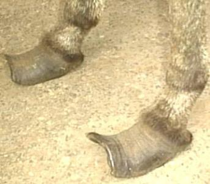 |
| Overgrown donkey hooves should be trimmed a month earlier |
| (c) KENDAT, Kenya
|
4 Skin Condition and Diseases
a. Swellings under the skin include:
i. Abscess
ii. Haematoma
iii. Tumours
b. Skin diseases
i. Bacterial Diseases
- Dermatophilosis
- Glanders
- Ulcerative lymphangiits
- Fistulous withers and poll evil
ii. Viral Diseases
- Sarcoids
iii. Parasitic Diseases
- Ticks
- Lice and flea
- Myasis (warbles)
- Manges
iv. Fungal Diseases
a. Ring worm
- Avoid contact of infected and uninfected animals/equipments.
- Treatment- severe cases of ring worm are treated with anti-fungal creams such or oral griseofulvin (contraindicated in pregnant mares) otherwise most cases recover naturally.
b. Epizootic Lymphangitis
i. Ticks:
ii. Lice and fleas
iii. Mange
Prevention and treatment
Control and Prevention of External Parasites
- Tape worms
- Liver flukes
- Roundworms.
Symptoms of worms:
- Lethargy
- Poor coat
- Poor condition
- Anaemia
Prevention/Treatment:
Removal of faeces from pasture every 2-3 months or rotate grazing to reduce contamination of grazing resulted in a decrease in worm egg counts This is a simple, low cost method of reducing worm burden in donkeys. Keeping animals in fly-proof accommodation for at least part of the day when vector flies are prevalent, can also reduce the incidence.
a. Strogylosis
- Pain and colic
- Fever
- Loss of appetite
- Damage to an artery to the intestine. Adult strongyles are found lining the gut and feed on the animals blood which results in weakness and poor body condition
Prevention:
In areas where the worm burden is high it is advisable to deworm the donkey after every three or six months intervals. In other instances strategic deworming is the best way of controlling the worms which targets the period when the infective stage of the worm is highest. Treatment: use any of the following: lvermectin orally or Fenbendazole
b. Ascarid worms
These worms don't cause much problem to the adult donkeys except when they block the gut hence causing colic; but poses problem in foals
- Coughing
- Weakness and emaciation
- Unthriftness
- Adult worms are some times seen in dung
Prevention and treatment
c. Tape worms/ Cestodes
Treatment:
d. Liver fluke Disease
Clinical sign
- Tiredness
- Loss of appetite
- Swelling on the skin
Prevention and treatment
- Avoiding animals grazing in swampy areas is effective prevention method.
- Oxyclozanide or triclabendazole are used to treat fluke.
Dewormers/Anthelmintics for donkeys in the Market
| Drug | Animal use | Worms Targeted | Efficacy | Resistance |
| Oxyfendazole | Cattle, sheep, goats and equines | P. equorum -Large and small strongles resistant to other Benzimidazoles | Higher plasma concentration comparedto Fenbendazole - Broad spectrum | Very high |
| Ivermectin* (acts on ectoparasite and endoparasite) - relatively expensive | Dogs, cats, equine, sheep, cattle, goats | Large and small strongles, P. equorum- Arthropods e.g Gasterophilus | High - Broad spectrum | Medium |
| Pyrantel | Equine | P.equorum, small strongyles | Narrow spectrum | Medium |
| Fenbendazole* | Same as Ivermectin | P. equorum - Large and small strongles | Low efficacy -Broad spectrum | Low |
| Piperazine (Cheap and readily available) | Avian, bovine, equine | P equorum, small strongyles | Very narrow spectrum - Effective on ascarids, poorly effective | Low |
| Albendazole (Highly misused, readily available) | Most domestic animals | Broad spectrum -Low efficacy | Very high |
Control and Prevention
- Strategic deworming
- Practice clean pastures/feed management.
- Frequent use of anthelmintics and sub-optimal dosing may cause resistance.
- Egg counts to be used as a guide to worming e.g. in treatment of tapeworm this is done when there is positive identification of eggs in faeces.
7. Infectious Diseases
A. Bacterial Diseases
a. Strangles
b. Tetanus or Lock Jaw
Clinical signs
- History of deep wound(s) which can already be healed completely.
- Muscle stiffness and locked jaw-unable to eat and swallow food
- Dilated pupil
- The animal has a frightened expression
- The ears stickup
- Respiratory failure and death
B. Viral Diseases a. Flu - Is caused by viruses Clinical features
- High temperature.
- Later on there is coughing
- Watery discharge from the nostrils which later becomes thicker and yellowish.
- As time goes on the cough becomes more severe.
Prevention - Vaccination
B. Fungal Diseases a. Epizootic lymphangitis
Clinical signs
- Development of lumps under the skin along the lymphatic stream.
- The lumps burst and yellow pus discharges
- Emaciation.
Prevention
- Affected animals should be kept away from healthy animals.
- Harnesses and grooming equipment should be disinfected.
- Control of insects.
- Severe cases should be euthanized.
8. Main Respiratory Diseases
a) Strangles - This a highly contagious bacterial infection of the equine (as discussed above
b) Pneumonia: is an inflammation of the bronchioles
- Secondary to viral or bacterial upper respiratory disease
- Inhalation of foreign material e.g. food, drenched or stomach-tube medicines (aspiration pneumonia)
Symptoms:
- Reluctance to move.
- Arched back.
- Head hanging.
- Shallow/fast breathing.
- Temperature
Clinical signs
- Fever
- Increased pulse rate
- Increased respiratory rate
- Coughing
- Nasal discharge
Prevention/Treatment:
- Good food.
- Plenty water.
- At least two weeks complete rest.
- Allow animals with respiratory disease to rest and recover properly, before starting heavy work again,
- Treat secondary bacterial infections early (antibiotics - see below),
- Avoid drenching equines with wormers, liquid paraffin etc. and use extreme care when passing a stomach tube
c) Lung worms
- Lung worms can cause inflammation of the bronchioles in equines
- Infection mainly acquired towards end of wet season
Clinical signs
- persistent coughing for several months
- may have slightly increased respiratory rate and mildly increased lung sound
- non-progressive condition
Preventions
- Remove faeces from environment to prevent transmission
- Avoid keeping horses with donkeys
- If horses are kept with donkeys, treat the donkeys for worms,
- Treat regularly for worms(every 3 months)
Treatment
- Ivermectin 0.2 mg/kg(1ml/50 kg) or
- Fenbendazole 15 mg/kg or
- Thiabendazole 440 mg/kg and repeat after 2 days
D. Protozal Diseases a. Trypanosomiasis
Clinical findings
Diagnosis
Treatment
1. Homiduim bromide or Homidium Chloride 1mg/kg bwt example Ethidium and Novidium
.2. Diminazene aceturate (Berenil, Norotryp) can cause nervous signs and death if not carefull used. Dose: 3.5mg/kg
3. Isometamidium chloride: for prophylaxis and curative: use separate needle for filling the syringe and jabbing.
4. Quinapyramine sulfate: prior to its use the donkey must be well rested; fatigue can cause curare like reaction.
b. Babesiosis
Clinical findings
Treatment
Prevention
Causes of colic
Feed
- Sudden changes to what the donkey eats, such as overfeeding and irregular feeding- e.g. too much food at once ortoo much grain.
- Poor quality food, such as moldy hay, or too much dry straw (indigestible roughage
- Long gaps between meals
- Fresh highly fermentable green fodder that produce gas
Water
- Not enough water
- Rapid drinking of too much (cold) water
- Water not supplied regularly
Internal parasites - Some internal parasites can cause colic.
Poor Teeth - Will lead to large junk of food passing through hence causing blockage.
Sand - the animal may swallow sand if it is grazing on the sandy ground where grass is scanty. The swallowed sand can cause inflammation and impaction in the gut.
Eating strange things - Plastic bags, pieces of ropes and all sorts of rubbish can accumulate along gut and cause colic
Clinical signs of Colic
-
Kicking or looking at flank
-
Sweating
-
Restless
-
Reduced appetite
-
Rolling on the ground
-
Pawing the ground
Diagnosis
-
History: to be taken to establish change in management to be noted- change of diet, access to excess feed.
-
Assessment of pain: donkeys don't show overt signs of pain- so colic may not be identified until the terminal stages of disease. A donkey in pain will stand with its head lowered, lie down or not respond as normal and may be dull. Dullness is the most common sign of impactive colic followed by reduced appetite.
-
Heart rate: goes up from about 44/min to 60/min in donkeys with impaction colic while other types of colic cause heart rates upto 60-100/min.
-
Respiratory rate: severe abdominal pain may increase the respiratory rate in an apparent attempt to reduce the movement of the diaphragm and chest
-
Rectal temperature: increase maybe due to physical exertion or infection.
-
Appetite: must be assessed in a dull donkey as it might be the only sign of colic.
Treatment
- Pain relief: use of nasogastric intubation will help relieve pain, use of NSAIDs e.g. Flunixin meglumine
- Correcting dehydration: rapid rehydration IV will restore circulatory blood volume and improve tissue perfusion; will correct shock due to absorption of endotoxin through a compromised intestinal wall
- Making an impacted donkey move or eat fresh grass may make the animal pass ingesta. Avoid long fibres such as hay and straw until the normal transit of ingesta is established.
- Impaction colic can be managed by use oral laxatives, mild analgesics, IV/oral fluids. Administration of mineral oil to caecal impaction is less effective than in treatment of large colon impaction because the oil can pass straight into colon without penetrating the caecal mass.
Prevention of colic
- Feed small quantity of good quality food at regular intervals
- Do not prevent the horse from eating for a long period, and then let it eat a lot
- Avoid grain overfeeding
- Offer water little and frequently
- Deworm regularly (every 3 months)
- Check teeth regularly and rasp accordingly
-
Rabies is a fatal viral infection in mammals and is transmitted in saliva.
-
Rabies is fatal to humans so extreme care must be taken when handling any suspected case
-
Transmission - Equines are infected via a bite from a rabid animal (dog,donkey or other animals)
-
Clinical signs
-
Divided into the furious (encephalitis) and dumb (paralytic) forms; the disease usually is a combination of both- signs will include
-
Change of behaviour, colic, self mutilation especially on the external genitalia, grinding the teeth, foaming at the mouth, paresis or spastic or flaccid paralysis in one or more limbs and convulsion.
-
Hydrophobia
Message to the owners
- Any animal showing abnormal behaviour or after being bitten by a dog should be isolated in a secure place
- If a donkey is bitten by a suspected rabid dog, it is recommended to immediately wash the wound generously with soap and water without touching the area. Gloves required
2. Anthrax
-
Anthrax is an bacterial infection of blood
-
Other species suddenly die of the disease, but horses and donkeys may be ill for a long time and not always die.
Clinical signs
-
high temperature (41oc)
-
high pulse rate
-
large swelling around the belly
Transmission - Animals can get the disease when they eat a bit of contaminated soil with grass.
Prevention
-
Vaccination
-
Avoid that vultures, dogs, etc. can have contact with the blood by burying animals died from anthrax very deep.
Treatment - Give injections of antibiotics such as penicillin
Principle of Vaccination
- Vaccine is a harm less form of microorganisms (virus, bacteria) administered to the animals orally or parentally.
- Due to vaccine/ antigen introduced into the bodies, the animal produces antibodies to protect the animal against the same disease.
- Vaccines are either live or dead requiring their own handling methods
- Antibody formation requires at least two to three weeks
Vaccination Protocol
- When a vaccine is introduced in to the body, it forms immunity in the body of the animal
- Vaccination is a preventive method from different contagious and infectious diseases and not curative
- Vaccination plays a roll in the eradication of infectious diseases.
- Vaccinate only healthy animals as well as those presented to vet clinic for treatment.
- Vaccinate all equines starting from 6 weeks old including pregnant mare
3. Glanders
The disease affects the skin and lungs. Horses are resistant to glanders but mules and donkeys die within two weeks
Clinical Signs
-
Fever
-
Watery nasal discharge initial but later on the discharge gets thicker.
-
Lumps appear in the nostril and break open. After healing the lump leaves a star-shaped scar in the nostril. The burst lump also releases a sickly honey-like discharge.
Treatment: sulphadiazine.
-
Handling of vaccines
- A.H.S ------------------1cc for adult animals and 1.5 cc for young
- Anthrax----------------- 1cc for adult animal and 1.5 cc for young
- Tetanus---------------- 1cc for adult animal and 1.5 cc for young
Conditions affecting the teeth include sharp edges and overgrown teeth which may affect the ability of the donkey to chew
Tooth rasping
Animals with no clinical signs may still have sharp or damaged teeth that may cause problem later. Older animals may need rasping every 3-6 month
Clinical signs of tooth problem include
-
Thin animal, dropping food (in balls), reluctance to eat, increased salivation, foul smell from the mouth
| 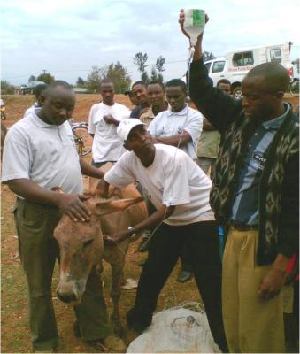 |
| A donkey undergoing treatment |
| (c) KENDAT, Kenya
|
How to rasp
1. It is important to use rasping instrument/ equipments and mouth gag for teeth rasping. The mouth gag if available can be used to examine all of the molar teeth , palate ,upper jaw , lower jaw , cheeks tongue etc.
2. Things to examine are sharp edges, hooks, spikes broken or missing teeth.
3. Sharp edged teeth must be rasped until it comes to the level.
Horse Sickness
Donkeys seem to be reasonably immune to this disease and, when it does present itself, it is usually takes a much milder form than in horses. However, it should be treated with respect. If the donkey is allowed to rest for 3 weeks recovery is usually spontaneous. It is prevalent after the rains when mosquitoes are more prevalent.
Symptoms:
- Swollen eye sockets, under the jaw and, sometimes, in the sheath area
- Liquid dripping from nose and mouth
- Signs of colic (discomfort)
- The donkey may still graze naturally, but it will become weak and show a reluctance to work.
Prevention/Treatment:
- 3 weeks complete rest.
- Provide good grazing with shade available.
- Provide plenty of fresh water.
- Use 'wet smoke fires' at night. These not only keep livestock free from mosquitoes (including those that are suspected of spreading Rift Valley Fever), they benefit humans too.
- Use damp grass/manure as fuel and place in a container (a half drum is excellent). This will create smoke instead of flames. It is very effective against all flying insects.
- If the farmer has pyrethrum on his farm, a few dry flowers added to the top of the fire are a huge benefit. If managed sympathetically, recovery is usually spontaneous
Mud Fever
Mud fever, which is extremely painful, is only seen in the wet weather or when animals are left standing in wet, muddy conditions. In sheep, goats and cattle this will result in foot rot. In donkeys it will result in mud fever. Mud fever is a group of diseases causing irritation and dermatitis in the lower limbs. Often caused by a mixture of bacteria, typically Dermatophilus congolensis, and Staphylococcus spp, mud fever can also be caused by fungal organisms (dermatophytes). Photosensitization, chorioptic mange mites, contact dermatitis and other conditions also contribute to some cases.
Resulting in painful sores and scabs, which in severe cases can make a donkey lame, mud fever most commonly affects the pastern and heel area but can also affect the upper leg, the belly, and in some cases the neck and back (also known as Rain Scald). Non-pigmented skin tends to be more severely affected.
Muddy, wet fields are conditions in which mud fever thrives. As with any bacterial infection, Mud Fever can become a very serious condition very quickly. The legs can become swollen and sore and open sores can become quickly infected. Often, such is the level of damage to the skin that these open sores can become very difficult to heal. The donkey will be very reluctant to move as this is very painful.
Under normal circumstances the skin acts as a protective barrier, preventing microorganisms from entering the donkeys system and doing any damage. However, the integrity of the epidermis can become compromised through the abrasion of soil grit on cold, wet skin. The continual wetting of the skin causes a breakdown of the protective barrier of the epidermis, allowing the bacterium to enter and cause infection
Symptoms:
- Swelling of the affected area
- Heat and small scabs
- Listlessness and fever
- Reluctance to move
- In severe cases the affected area will ulcerate and the skin will split causing the possibility of secondary infections
Prevention/Treatment:
- Keeping the donkey out of the wet and mud is the first step in treatment of mud fever
- Initial treatment also consists of clipping of the hair away from the infected area and use of an anti-bacterial lotion on the scabs to soften them and gently remove them.
- When the scabs are removed, the skin must be kept clean and dry. Washing the infected area with an antiseptic solution (a hydrogen peroxid solution - never neat as this will cause further damage) is part of the treatment for mud fever.
- The legs should be dried thoroughly after washing and then sprayed with Alamycin spray (commonly known as 'dawa blue' in East Africa) which is readily available and affordable in East Africa.
- The donkey will need a treatment of 5 days Penstrep antibiotic (readily available in East Africa).
- A Veterinary Surgeon should be consulted for further treatment.
False beliefs and myths about donkeys
| 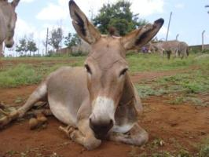 |
| Donkey |
| (c) S. Fontana, Biovision
|
Different communities hold different myths and false beliefs about donkeys. Some of them are simply unrealistic. These myths and beliefs should not discourage you from taking good care of your donkey. Below are some examples of false beliefs and myths:
1. If a donkey gets sick it will die no matter what you do to it.
Fact: If a donkey is sick like any other animal it needs adequate medical attention. It needs to be fed well and given plenty of water to replace lost fluid. In a short while, it will be up and about.
2. A donkey will die not worked hard every day
Fact: A donkey is a very hard working animal. For maximum output, it requires enough rest, adequate feeding and watering. When not working it is important to remove the harness so it can rest in comfort.
3. If you get in contact with a donkey's dung you will contract tetanus.
Fact: Tetanus is caused by bacteria, which is abundant in equine faeces (including donkey dung) and in the soil. Because of their tendency to roll on the ground, donkeys often contract tetanus if they have open wounds which get in contact with the dung or the soil.We can only get infected if we have open wounds that get in contact with the dung. The good news is that we vaccinate our donkeys and even ourselves against tetanus.
4. A donkey can only feed at night because during the day it is supposed to be working.
Fact: Working donkeys use large amounts of energy during the cause of their working day. They therefore need quality, high-energy foods to maintain their body condition. Maximum food intake improves body condition and enables the donkey to work more efficiently
5. If you don't work a donkey hard it will become hostile and unfriendly
Fact: A well cared for donkey is friendly and a nice companion at work.
6. Every new donkey has to get wounds before it gets used to the new work it does.
Fact: Donkeys are very courteous and have a high sense of self preservation. It is difficult to force or frighten a donkey to its own best interest. They should therefore be trained to take on new tasks instead of being forced with beatings and caning
7. If cows are kept in the same enclosure with donkeys the cows will become infertile
Fact: It is just a misplaced fear that donkey's presence contaminates the cows and impacts on their fertility. Animals are social; they live together and blend naturally. Unlike other domestic animals, donkeys get low priority when it comes to allocation of resources. Thus, if cows and donkeys are housed together and given feed, chances are that the donkey will access most of the food leaving the cows with less food and will therefore be less productive.
8. If a donkey gets blind grid glass bottle and put the glass powder in the eye. It will clean the cloudy cornea to heal.
Fact: A donkey with an eye problem may lead to the clouding of the eye. This may be caused by dust, pollution or flies. At the earliest sign of discharge, redness or cloudiness, take the animal for treatment. Delay may cause the condition to get worse and the donkey may become blind. Do not home remedies to treat the eyes as they can damage the sensitive structures and cause blindness. Ground glass will puncture the eye leading to blindness.
| 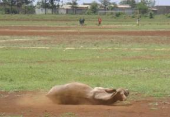 |
| Donkey |
| (c) S. Fontana, Biovision
|
Usage
The size of a donkey is a limitation to the amount of work that it can do. Most adult African donkeys range in weight from 90-210 kg, which is less than the live weight of most cattle used for draft work (Pearson and Ouassat, 1996; Nengomasha, Jele and Pearson, 1995). However, if donkeys are well managed they can do many of the tasks undertaken by oxen, provided that they are teamed in sufficient numbers to provide the necessary draft force.
It has been shown that well-fed, well-trained donkeys teamed in fours are capable of sustaining a combined draft force of over 1 kN for a 4-hour working period. This power output is sufficient to plow relatively deep soil with a mould board plow, as well as complete most other agricultural tasks associated with crop production, in an acceptable time. However, animals are not always in such good condition, nor is it always possible to use a team of four animals. These problems can be alleviated by improving the management of the animals to improve the power supply or by reducing the demand for power by modifying the implements or tillage practices.
Sadly, donkeys have very little market value in East Africa. They are, generally, valued at the same rate as a meat goat (between 3 - 5 thousand shillings). If donkeys had more value attached to them, they would be better cared for and owners would take more interest in their breeding and management methods.If one considers the value of the produce that a donkey carries in its working lifetime, it is obvious that it is a very undervalued asset to a farmer. If the owners of donkeys realized just how valuable an asset they had, they would pay more attention to whom they 'contracted' this 'car on leg'.
Information Source Links
- ADMS, the American Donkey and Mule Society. www.lovelongears.com
- Blench, R. 2000. The History and Spread of Donkeys in Africa. Animal Traction Network for Eastern and Southern Africa (ATNESA)
- Clutton-Brook, J. 1999. A Natural History of Domesticated Mammals. Cambridge, UK: Cambridge University Press. ISBN 0521634954
- Huffman, B. 2006. The Ultimate Ungulate Page: Equus asinus. (accessed November 2017). www.ultimateungulate.com
- International Museum of the Horse (IMH). 1998. Donkey. (accessed December 3, 2006).
- KENDAT Heshima Punda team Kenya
- Luurt, O. (2004). Donkeys for traction and tillage. Agrodok 35. Agromisa Foundation, Wageningen. ISBN: 90-77073-95-7
- Nowak, R. M., and J. L. Paradiso. 1983. Walker's Mammals of the World. Baltimore, Maryland, USA : The Johns Hopkins University Press. ISBN 0801825253
- Oklahoma State University (OSU). 2006. Breeds of Livestock. (accessed December 3, 2006). http://www.ansi.okstate.edu/breeds/other/
- Starkey, P. and M. Starkey. 1997. Regional and World trends in Donkey Populations. Animal Traction Network for Eastern and Southern Africa (ATNESA)
- The Donkey Sanctuary (DS). 2015. Donkey and Mule Care Handbook
- Val Corr, Lake Breeze Farm Naivasha - Kenya
- Wikipedia - Donkeys en.wikipedia.org